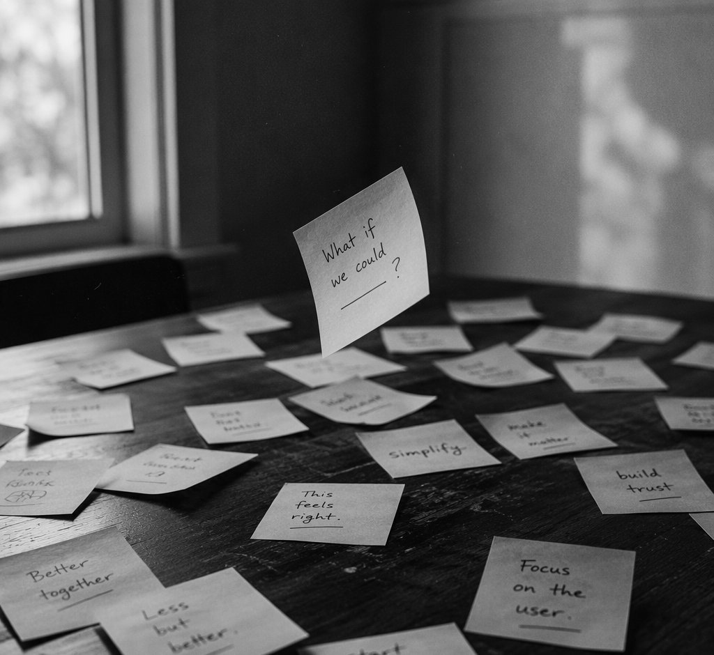

<!DOCTYPE html><html lang="en"><head><title>aaaloooooof | it turns a sandwich into a baquet</title><meta charset="utf-8"><meta name="viewport" content="width=device-width,initial-scale=1,maximum-scale=2"><meta http-equiv="X-UA-Compatible" content="IE=edge,chrome=1"><meta name="renderer" content="webkit"><meta name="theme-color" content="#222325"><meta name="apple-mobile-web-app-status-bar-style" content="#222325"><meta name="msapplication-navbutton-color" content="#222325"><link rel="stylesheet" href="https://cdn.jsdelivr.net/gh/SimonAKing/font/font.min.css"><link rel="stylesheet" href="css/style.css"><meta http-equiv="x-dns-prefetch-control" content="on"><link rel="dns-prefetch" href="https://cdn.jsdelivr.net"><link rel="prefetch" href="https://cdn.jsdelivr.net/"><meta name="description" content="aaaloooooof personal page"><link rel="icon" href="favicon.ico" type="image/x-icon"><link rel="shortcut icon" href="favicon.ico" type="image/x-icon"><!--[if lt IE 9]><style>.alert { padding: 15px; margin-bottom: 20px; border: 1px solid transparent; border-radius: 4px } .alert-danger { background-color: #f2dede; border-color: #ebccd1; color: #a94442; border-bottom: 1px solid #ebccd1 } .alert-link { color: #843534; font-weight: bold } .topframe { margin: 0; padding-left: 15px; padding-right: 15px; text-align: center; border-radius: 0; position: fixed; left: 0; right: 0; top: 0; z-index: 1000 }
</style><div class="alert alert-danger topframe">你的浏览器实在<strong>太太太太太太旧了</strong>，放学别走，升级完浏览器再说<a class="alert-link" target="_blank" href="http://browsehappy.com">立即升级</a></div><script src="https://cdn.bootcss.com/html5shiv/r29/html5.min.js"></script><script src="https://cdn.bootcss.com/respond.js/1.4.2/respond.min.js"></script><![endif]--></head></html><body><main><div class="content content-intro"><div class="content-inner"><canvas id="background"></canvas><div class="wrap fade"><h2 class="content-title">aaaloooooof</h2><h3 class="content-subtitle" original-content="把一切事物教给一切人的艺术">&nbsp;</h3><p class="intro-note">教育科技 / AI 产品 / 用户研究 / PRD</p><a class="enter">ENTER</a><div class="arrow arrow-1"></div><div class="arrow arrow-2"></div></div></div><div class="shape-wrap"><svg class="shape" width="100%" height="100vh" preserveAspectRatio="none" viewBox="0 0 1440 800" xmlns:pathdata="http://www.codrops.com/"><path d="M-44-50C-52.71 28.52 15.86 8.186 184 14.69 383.3 22.39 462.5 12.58 638 14 835.5 15.6 987 6.4 1194 13.86 1661 30.68 1652-36.74 1582-140.1 1512-243.5 15.88-589.5-44-50Z" pathdata:id="M -44,-50 C -137.1,117.4 67.86,445.5 236,452 435.3,459.7 500.5,242.6 676,244 873.5,245.6 957,522.4 1154,594 1593,753.7 1793,226.3 1582,-126 1371,-478.3 219.8,-524.2 -44,-50 Z"></path></svg></div></div><div class="content content-main"><header class="nt-bar"><a class="nt-name" href="index.html"><span class="zh">aaaloooooof</span><span class="en">Jingyi Lou · Portfolio</span></a><button class="nt-toggle" aria-label="展开导航菜单" aria-expanded="false"><span></span></button></header><nav class="nt-menu" aria-label="全站导航"><a class="nt-link" href="index.html"><span class="no">01</span><span class="t">首页</span></a><a class="nt-link" href="projects.html"><span class="no">02</span><span class="t">项目案例</span></a><a class="nt-link" href="thoughts.html"><span class="no">03</span><span class="t">产品思考</span></a><a class="nt-link" href="weekly.html"><span class="no">04</span><span class="t">周报</span></a><a class="nt-link" href="about.html"><span class="no">05</span><span class="t">关于我</span></a><a class="nt-link" href="resume.html"><span class="no">06</span><span class="t">简历与联系</span></a><div class="nt-foot">教育科技 × AI 产品 · github.com/aaaloooooof</div></nav><div id="card"><canvas class="grid-background" id="gridCanvas"></canvas><div class="card-inner fade"><div class="hp"><section class="hp-sec hp-hero" id="hero"><div class="hp-label">AI Product Manager · Portfolio</div><h1>把教育问题变成<br>可运行的 AI 产品原型</h1><p class="hp-who">楼婧怡 · 华东师范大学课程与教学论硕士（2028 届）· 8 个月 7+ 个可运行原型</p><p class="hp-sig"><span id="signature" data-translate="signature" original-content="it turns a sandwich into a baquet">it turns a sandwich into a baquet</span></p><div class="hp-qs"><div class="hp-q"><div class="no">01</div><h3>AI 能否真正进入具体教育场景</h3><p>不为用 AI 而用 AI</p></div><div class="hp-q"><div class="no">02</div><h3>产品是否形成清晰的使用闭环</h3><p>有完整的「进入—使用—反馈—留存」路径</p></div><div class="hp-q"><div class="no">03</div><h3>技术是否真正降低成本</h3><p>价值锚点是学习、教学或信息处理的「降本」，不是炫技</p></div></div></section><section class="hp-sec" id="projects"><div class="hp-label">Selected Work · 产品墙</div><h2 class="hp-h2">做完整闭环的产品，而不是 demo 玩具</h2><div class="hp-tier">主打 · Featured</div><div class="hp-big"><a class="hp-bcard" href="https://learnloop-8dc995b0-18pwnmpof.eazo.dev/" target="_blank" rel="noopener"><div class="pic"></div><div class="bd"><div class="num">Project 01</div><h3>LearnLoop · 个性化学习路径产品</h3><p>独立定义「诊断—推荐—执行—反馈—复盘」产品闭环，完成信息架构与领域模型设计，AI 辅助开发 Django＋Vue 前后端分离 MVP。</p><div class="tags"><span>AI 教育</span><span>0→1 产品</span><span>Django + Vue</span></div><span class="go">在线 Demo →</span></div></a><a class="hp-bcard" href="https://timelume-1452acd5.eazo.dev/" target="_blank" rel="noopener"><div class="pic"></div><div class="bd"><div class="num">Project 02</div><h3>TimeLume · 自然语言时间记录</h3><p>用自然语言降低记录成本的时间管理工具：说一句话即可完成时间记录与回顾，验证 C 端 AI 交互的轻量形态。</p><div class="tags"><span>C 端</span><span>AI 交互</span></div><span class="go">在线 Demo →</span></div></a><a class="hp-bcard" href="https://idea-editor-6814532f.eazo.dev/" target="_blank" rel="noopener"><div class="pic"></div><div class="bd"><div class="num">Project 03</div><h3>Idea Editor · 创意发散重组编辑器</h3><p>AI 辅助的创意发散与重组工具，把零散想法拆解、碰撞、重新组合，验证创作场景下的 AI 协作模式。</p><div class="tags"><span>C 端</span><span>AI 应用</span></div><span class="go">在线 Demo →</span></div></a><div class="hp-bcard hp-static"><div class="pic"></div><div class="bd"><div class="num">Project 04</div><h3>AI 教育政策新闻稿工作流</h3><p>同一工作流在 n8n / Coze / Codex 三平台各实现一版并横向对比，最终版每周三 9:00 全自动投递邮箱：人工 1h/2 篇 → 全自动零人力。</p><div class="tags"><span>工作流自动化</span><span>三平台迭代</span><span>零人力 ROI</span></div></div></div></div><div class="hp-tier">实战 · 关键数字</div><div class="hp-mid"><div class="hp-mcard"><h4>初中几何辅导 Agent</h4><div class="stat">真实学生验证</div><p>基于 ZPD 脚手架教学法的引导式辅导 Skill，只给阶梯提示不代做，覆盖概念讲解与解题思路引导。</p></div><div class="hp-mcard"><h4>五金公司 ERP 系统</h4><div class="stat">付费交付 · 4 天</div><p>FDE 模式从客户原型到可用系统，Netlify 部署 + Supabase 数据库，客户实际使用 1 个月反馈良好。</p></div><div class="hp-mcard"><h4>MILOU 数字展厅 H5</h4><div class="stat">123 UV · 1091 次浏览</div><p>线下艺术展产品化为移动端 H5，搭建「访问—浏览—互动—分享」行为指标体系，平均浏览深度 3.0。</p></div></div><div class="hp-tier">更多原型 · 小工具合集</div><div class="hp-mini"><div class="row"><span class="t">Mavis Demo Generator</span><span class="d">AI Demo 生成与导出平台（教育场景）</span></div><div class="row"><span class="t">MirrorCampus</span><span class="d">校园 AI 治理看板</span></div><div class="row"><span class="t">BackCurve</span><span class="d">AI 体态自查工具</span></div><div class="row"><span class="t">Woolly-Coder</span><span class="d">Codex 桌面宠物</span></div><div class="row"><span class="t">personalized-learning-system</span><span class="d">个性化学习系统框架原型</span></div><div class="row"><span class="t">work--system</span><span class="d">工作系统实验</span></div><a class="row" href="https://github.com/aaaloooooof?tab=repositories" target="_blank" rel="noopener"><span class="t">更多实验原型 →</span><span class="d">github.com/aaaloooooof</span></a></div></section><section class="hp-sec" id="background"><div class="hp-label">Background · 为什么我懂教育</div><h2 class="hp-h2">懂学习的人，才做得出懂学习的 AI</h2><div class="hp-bg3"><div class="hp-col"><h4>Research</h4><div class="hp-item"><b>7 篇</b>中英文实证研究在投 / 录用（1 作 / 通讯），含 Learning and Instruction 等刊</div><div class="hp-item"><b>学习科学</b>方向：教育测量、教师教育、AI 教育应用</div></div><div class="hp-col"><h4>Experience</h4><div class="hp-item"><b>23 节</b>AI 应用与 Python 创意编程课程独立设计交付，40+ 青少年学员，参与率 95%+</div><div class="hp-item"><b>量化负责人</b>教育工作坊量化分析与数据体系搭建</div><div class="hp-item"><b>200+ 人</b>复旦 NowIdea 产品社群创始人，定位孵化产品、对接投资</div></div><div class="hp-col"><h4>Content</h4><div class="hp-item"><b>0→5000+</b>小红书个人内容账号冷启动增长</div><div class="hp-item"><b>多公众号</b>教育内容矩阵运营，持续输出产品与学习科学内容</div></div></div></section><section class="hp-sec" id="contact"><div class="hp-label">Contact</div><div class="hp-contact"><div class="hp-cbody"><h3>楼婧怡 <span>ECNU · 2028 届</span></h3><p class="hp-status"><i></i>开放 AI 产品实习机会 · Base 上海 · 每周 4–5 天 · 可到岗 6 个月以上</p><div class="hp-clinks"><a href="mailto:51284102015@stu.ecnu.edu.cn">📧 51284102015@stu.ecnu.edu.cn</a><a href="https://github.com/aaaloooooof" target="_blank" rel="noopener">🐙 github.com/aaaloooooof</a></div></div><div class="hp-wechat"><span>微信扫一扫</span></div></div><footer class="hp-foot">© 2026 楼婧怡 · aaaloooooof</footer></section></div><style>
#card{display:block;overflow-y:auto;-webkit-overflow-scrolling:touch;padding:0;text-align:center}
#card .card-inner{width:100%;max-height:none;padding:0}
#gridCanvas{position:fixed;inset:0;width:100vw;height:100vh}
.nt-bar{position:fixed;top:0;left:0;right:0;z-index:10001;display:flex;align-items:flex-start;justify-content:space-between;padding:20px 26px;pointer-events:none;font-family:"Inter","PingFang SC","Microsoft YaHei",sans-serif}
.nt-name{pointer-events:auto;text-decoration:none;display:inline-block;padding:10px 16px 11px;border-radius:14px;background:rgba(8,8,12,.55);border:1px solid rgba(255,255,255,.09);backdrop-filter:blur(12px);-webkit-backdrop-filter:blur(12px);transition:border-color .3s}
.nt-name:hover{border-color:rgba(255,255,255,.24)}
.nt-name .zh{display:block;font-size:.98rem;font-weight:300;color:#f2f2f4;letter-spacing:.3em}
.nt-name .en{display:block;font-size:.58rem;font-weight:300;letter-spacing:.34em;text-transform:uppercase;color:#9a9aa4;margin-top:4px}
.nt-toggle{pointer-events:auto;width:46px;height:46px;border-radius:50%;border:1px solid rgba(255,255,255,.14);background:rgba(8,8,12,.55);backdrop-filter:blur(12px);-webkit-backdrop-filter:blur(12px);cursor:pointer;position:relative;transition:border-color .3s,transform .45s cubic-bezier(.4,0,.2,1)}
.nt-toggle:hover{border-color:rgba(255,255,255,.32)}
.nt-toggle span{position:absolute;top:50%;left:50%;width:16px;height:1.5px;background:#e8e8ec;transform:translate(-50%,-50%);transition:background .25s}
.nt-toggle span::before,.nt-toggle span::after{content:"";position:absolute;left:0;width:16px;height:1.5px;background:#e8e8ec;transition:transform .35s cubic-bezier(.4,0,.2,1)}
.nt-toggle span::before{top:-5px}
.nt-toggle span::after{top:5px}
.nt-toggle.open{transform:rotate(90deg);border-color:rgba(255,255,255,.4)}
.nt-toggle.open span{background:transparent}
.nt-toggle.open span::before{transform:translateY(5px) rotate(45deg)}
.nt-toggle.open span::after{transform:translateY(-5px) rotate(-45deg)}
.nt-menu{position:fixed;inset:0;z-index:10000;background:rgba(5,5,9,.96);backdrop-filter:blur(18px);-webkit-backdrop-filter:blur(18px);display:flex;flex-direction:column;justify-content:center;padding:0 8vw;opacity:0;visibility:hidden;transition:opacity .45s,visibility .45s;font-family:"Inter","PingFang SC","Microsoft YaHei",sans-serif}
.nt-menu.open{opacity:1;visibility:visible}
.nt-link{display:flex;align-items:baseline;gap:16px;padding:11px 0;text-decoration:none;border-bottom:1px solid rgba(255,255,255,.06);opacity:0;transform:translateY(20px);transition:opacity .5s,transform .5s}
.nt-menu.open .nt-link{opacity:1;transform:none}
.nt-menu.open .nt-link:nth-child(1){transition-delay:.06s}.nt-menu.open .nt-link:nth-child(2){transition-delay:.11s}
.nt-menu.open .nt-link:nth-child(3){transition-delay:.16s}.nt-menu.open .nt-link:nth-child(4){transition-delay:.21s}
.nt-menu.open .nt-link:nth-child(5){transition-delay:.26s}.nt-menu.open .nt-link:nth-child(6){transition-delay:.31s}
.nt-link .no{font-size:.7rem;letter-spacing:.2em;color:#62626e;width:2em}
.nt-link .t{font-size:clamp(1.05rem,2.4vw,1.45rem);font-weight:400;color:#cfcfd6;letter-spacing:.06em;transition:color .3s,letter-spacing .3s}
.nt-link:hover .t{color:#fff;letter-spacing:.12em}
.nt-foot{margin-top:36px;font-size:.72rem;letter-spacing:.16em;color:#565662;text-transform:uppercase}
.hp{position:relative;z-index:2;max-width:1080px;margin:0 auto;padding:120px 28px 60px;text-align:left;color:#e8eaef;font-family:"Inter","PingFang SC","Microsoft YaHei",sans-serif;line-height:1.7}
.hp-sec{margin-bottom:110px}
.hp-label{font-size:.68rem;letter-spacing:.3em;text-transform:uppercase;color:#8a8a96;margin-bottom:18px}
.hp-h2{font-size:clamp(1.4rem,3vw,2rem);font-weight:500;color:#f2f2f5;letter-spacing:.01em;margin:0 0 34px}
.hp-hero h1{font-size:clamp(2.1rem,5.2vw,3.6rem);font-weight:500;color:#f2f2f5;letter-spacing:.01em;line-height:1.25;margin:0 0 18px}
.hp-who{color:#9aa0ac;font-size:.98rem;margin:0 0 6px}
.hp-sig{margin:0 0 44px}
.hp-sig span{font-family:"Georgia",serif;font-style:italic;font-size:.85rem;color:#5f636e;letter-spacing:.04em}
.hp-qs{display:grid;grid-template-columns:repeat(3,1fr);gap:14px}
.hp-q{border:1px solid rgba(255,255,255,.08);border-radius:16px;background:rgba(12,12,18,.6);padding:22px 22px 20px}
.hp-q .no{font-size:.68rem;letter-spacing:.22em;color:#6a6f7c;margin-bottom:12px}
.hp-q h3{font-size:1rem;font-weight:500;color:#eceef2;margin:0 0 8px;line-height:1.5}
.hp-q p{font-size:.85rem;color:#8f939f;margin:0;line-height:1.7}
.hp-tier{font-size:.72rem;letter-spacing:.24em;text-transform:uppercase;color:#7c818d;margin:38px 0 16px;padding-bottom:10px;border-bottom:1px solid rgba(255,255,255,.07)}
.hp-big{display:grid;grid-template-columns:1fr 1fr;gap:16px}
.hp-bcard{display:block;text-decoration:none;border:1px solid rgba(255,255,255,.08);border-radius:18px;background:rgba(12,12,18,.6);overflow:hidden;transition:transform .35s,border-color .35s}
.hp-bcard:hover{transform:translateY(-4px);border-color:rgba(255,255,255,.2)}
.hp-bcard .pic{aspect-ratio:16/9;overflow:hidden;background:#101014}
.hp-bcard .pic img{width:100%;height:100%;object-fit:cover;filter:grayscale(1) contrast(1.05) brightness(.92);transition:transform .6s}
.hp-bcard:hover .pic img{transform:scale(1.04)}
.hp-bcard .bd{padding:20px 22px 22px}
.hp-bcard .num{font-size:.66rem;letter-spacing:.2em;text-transform:uppercase;color:#7c818d;margin-bottom:10px}
.hp-bcard h3{font-size:1.12rem;font-weight:500;color:#f0f1f4;margin:0 0 8px}
.hp-bcard p{font-size:.88rem;color:#9aa0ac;margin:0 0 14px;line-height:1.75}
.hp-bcard .tags{display:flex;flex-wrap:wrap;gap:8px;margin-bottom:12px}
.hp-bcard .tags span{padding:3px 11px;border-radius:999px;border:1px solid rgba(255,255,255,.1);background:rgba(255,255,255,.04);color:#a8acb8;font-size:.74rem}
.hp-bcard .go{font-size:.82rem;color:#d8dae2;letter-spacing:.04em}
.hp-static{cursor:default}
.hp-static:hover{transform:none;border-color:rgba(255,255,255,.08)}
.hp-mid{display:grid;grid-template-columns:repeat(3,1fr);gap:14px}
.hp-mcard{border:1px solid rgba(255,255,255,.08);border-radius:16px;background:rgba(12,12,18,.6);padding:22px}
.hp-mcard h4{font-size:.98rem;font-weight:500;color:#eceef2;margin:0 0 12px}
.hp-mcard .stat{font-size:1.25rem;font-weight:600;color:#fff;letter-spacing:.01em;margin-bottom:10px}
.hp-mcard p{font-size:.85rem;color:#8f939f;margin:0;line-height:1.75}
.hp-mini{border:1px solid rgba(255,255,255,.08);border-radius:16px;background:rgba(12,12,18,.6);padding:6px 22px}
.hp-mini .row{display:flex;align-items:baseline;gap:16px;padding:11px 0;border-top:1px solid rgba(255,255,255,.05);font-size:.86rem;text-decoration:none;color:inherit}
.hp-mini .row:first-child{border-top:none}
.hp-mini .row .t{color:#c9cdd6;min-width:220px}
.hp-mini .row .d{color:#6f7480;font-size:.8rem}
.hp-mini a.row:hover .t{color:#fff}
.hp-bg3{display:grid;grid-template-columns:repeat(3,1fr);gap:14px}
.hp-col{border:1px solid rgba(255,255,255,.08);border-radius:16px;background:rgba(12,12,18,.6);padding:24px 22px}
.hp-col h4{font-size:.72rem;letter-spacing:.26em;text-transform:uppercase;color:#8a8a96;margin:0 0 18px;font-weight:500}
.hp-item{font-size:.88rem;color:#9aa0ac;line-height:1.8;margin-bottom:14px}
.hp-item:last-child{margin-bottom:0}
.hp-item b{display:block;font-size:1.3rem;font-weight:600;color:#fff;margin-bottom:4px}
.hp-contact{display:flex;align-items:center;gap:28px;border:1px solid rgba(255,255,255,.08);border-radius:20px;background:rgba(12,12,18,.6);padding:30px 32px;flex-wrap:wrap}
.hp-avatar{width:96px;height:96px;border-radius:24px;object-fit:cover}
.hp-cbody{flex:1;min-width:260px}
.hp-cbody h3{font-size:1.35rem;font-weight:500;color:#f2f2f5;margin:0 0 8px}
.hp-cbody h3 span{font-size:.8rem;color:#7c818d;font-weight:400;letter-spacing:.1em;margin-left:8px}
.hp-status{display:flex;align-items:center;gap:8px;font-size:.88rem;color:#a8e6a3;margin:0 0 14px}
.hp-status i{width:7px;height:7px;border-radius:50%;background:#4ade80;display:inline-block}
.hp-clinks{display:flex;flex-wrap:wrap;gap:10px}
.hp-clinks a{padding:8px 16px;border-radius:10px;border:1px solid rgba(255,255,255,.12);color:#d8dae2;text-decoration:none;font-size:.85rem;transition:border-color .3s,background .3s}
.hp-clinks a:hover{border-color:rgba(255,255,255,.3);background:rgba(255,255,255,.04)}
.hp-wechat{text-align:center}
.hp-wechat img{width:104px;height:104px;border-radius:12px;object-fit:cover;display:block}
.hp-wechat span{font-size:.72rem;color:#6f7480;letter-spacing:.14em;display:block;margin-top:8px}
.hp-foot{text-align:center;font-size:.78rem;color:#565a66;margin-top:60px;letter-spacing:.06em}
@media (max-width:860px){.hp-qs,.hp-mid,.hp-bg3{grid-template-columns:1fr}.hp-big{grid-template-columns:1fr}.hp{padding:100px 20px 40px}.hp-mini .row .t{min-width:0}}
</style></div></div></div><script src="https://cdn.jsdelivr.net/npm/animejs@3.2.1/lib/anime.min.js"></script><script>window.$ = selector => document.querySelector(selector)
const getOriginalContent = selector => $(selector).getAttribute("original-content")
window.subtitle = getOriginalContent(".content-subtitle")
window.signature = getOriginalContent("#signature")
window.config = {
	SIM_RESOLUTION: 128,
	DYE_RESOLUTION: 1024,
	CAPTURE_RESOLUTION: 512,
	DENSITY_DISSIPATION: 1,
	VELOCITY_DISSIPATION: 0.2,
	PRESSURE: 0.8,
	PRESSURE_ITERATIONS: 20,
	CURL: 30,
	SPLAT_RADIUS: 0.25,
	SPLAT_FORCE: 6000,
	SHADING: true,
	COLORFUL: true,
	COLOR_UPDATE_SPEED: 10,
	PAUSED: false,
	BACK_COLOR: { r: 30, g: 31, b: 33 },
	TRANSPARENT: false,
	BLOOM: true,
	BLOOM_ITERATIONS: 8,
	BLOOM_RESOLUTION: 256,
	BLOOM_INTENSITY: 0.4,
	BLOOM_THRESHOLD: 0.8,
	BLOOM_SOFT_KNEE: 0.7,
	SUNRAYS: true,
	SUNRAYS_RESOLUTION: 196,
	SUNRAYS_WEIGHT: 1.0,
}
</script><script src="js/main.js"></script><script src="js/background.js"></script></main></body>